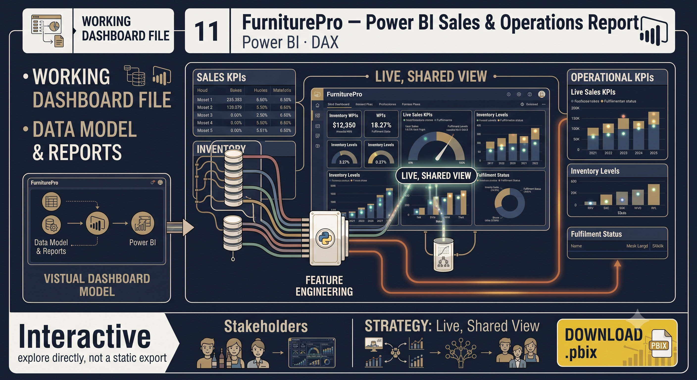

Selected Work
03Twelve projects spanning production ML at CarDekho, an insurance analytics tenure at Aegis, and applied coursework from XLRI Jamshedpur's PGCBA. Every card opens the real file — view inline or download.

Cross-Selling Lead Pipeline
Millions of customer records sat fragmented across databases with no unified view to cross-sell against.
12-step pipeline: SQL consolidation → NLP gender prediction (TF-IDF + Logistic Regression) → Random Forest lead scoring → rule-based product allocation → stratified 36K sample.

HMO Insurance AI Advisor
Customers needed personalized HMO plan guidance on demand, without waiting on a live sales agent.
FastAPI + orchestration layer blending conversation state, deterministic Excel eligibility rules and Gemini-generated explanations, backed by persistent SQLite memory for audit and analytics.

Graph Databases in PH Vehicle Insurance
Relational SQL joins can't surface hidden fraud-ring relationships between claims, drivers and agents.
Proposes a graph-database model — nodes, edges, index-free adjacency — for real-time fraud link analysis and commission-hierarchy tracking.

Two-Wheeler Insurance Distribution Optimization
Distribution budget was spread evenly across regions, ignoring demand density and margin.
A constrained optimization model recommending allocation weights per region, delivered as a live interactive scenario tool.

Marketing Channel Effectiveness Study
Marketing spend was allocated by acquisition volume, not by the value of the customers each channel actually brought in.
K-Means clustering (validated via elbow & silhouette, k=4) on ROI and margin, then a Decision Tree mapping channels to the resulting value segments.

Modelling for Business Analytics: Lead Source & Response Time
Unclear whether lead source or dealer responsiveness was the real driver of conversion.
Chi-square, ANOVA and two logistic regression models tested against CarDekho SEA lead data, validated with an ROC/AUC curve.

Predicting Movie Ratings with Machine Learning
Large content catalogs need personalized rating predictions to drive recommendations, not just popularity ranking.
Benchmarked Linear Regression, Random Forest and Gradient Boosting on MovieLens with 24 engineered features, validated via 10-fold cross-validation.

Data Mining: Diabetes Risk Classification & Clustering
An 86% class imbalance hid how well any model could actually catch at-risk diabetic patients.
ROSE oversampling plus a three-way classifier comparison (k-NN, Naive Bayes, Decision Tree), then k-means clustering to isolate a high-risk health cohort.

Capstone: Organ-Wise Disease Risk Prediction
A single overall health score hides which specific organ systems are actually at risk.
Multi-model pipeline (Logistic Regression, Random Forest, Gradient Boosting) across 100+ biomarkers, delivering organ-by-organ probability dashboards.

Market Street Wine — Case Study
A wine retailer needed to know which catalog segment to prioritize for millennial buyers.
R-based EDA and geospatial mapping of the wine catalog to identify the highest-opportunity price and variety segment.

FurniturePro — Power BI Report
Sales and operations KPIs were scattered across spreadsheets with no live, shared view.
A Power BI data model and report surfacing sales, inventory and fulfilment KPIs in one workbook.

Text Mining: Spam Classification & Fake News Analysis
SMS spam and news disinformation both hide behind text — the goal was to detect one and structurally characterize the other.
Compared four spam classifiers (BoW, TF-IDF, Sentence-Transformer embeddings, Zero-Shot BART) on 5,572 SMS messages, then used TextBlob sentiment, LDA topic modelling and spaCy NER to contrast true vs. fake news framing.